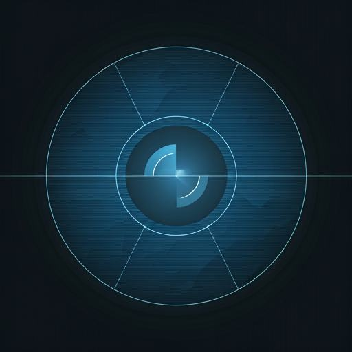
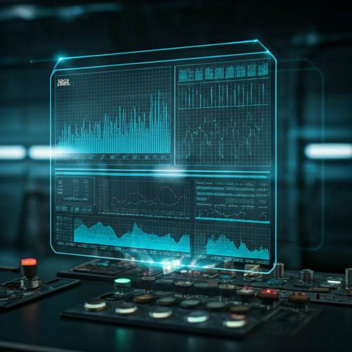
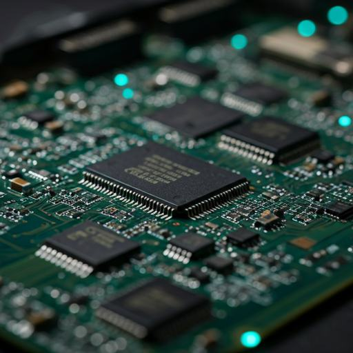

AI 영상 분석부터 산업용 IoT 데이터 수집, 임베디드 하드웨어까지. WSTORY는 현장의 데이터를 읽고 연결하는 기술을 직접 개발합니다.
Technical Specification 2024주행 중인 차량에서 촬영한 영상으로 설비를 실시간 검출·추적하고 이상 여부를 자동으로 판정합니다. 철도 시설물 검사 현장에서 검증한 기술입니다.

현장의 복잡한 산업 기기 데이터를 클라우드로 연결합니다. 특히 산업용 보일러 및 설비의 PLC와 직접 연동되는 고성능 데이터 수집 보드를 통해 공정의 투명성을 확보합니다.
보일러 등 산업 설비의 PLC와 직접 연동해 운전 데이터를 수집 · 전송합니다.
실시간 압력, 온도, 연료 효율 분석을 통한 에너지 최적화 및 이상징후 모니터링. 자세히 보기 →

센서 신호 수집 보드부터 모터 드라이버, 제어기까지 산업 현장에 필요한 하드웨어와 펌웨어를 직접 설계합니다.
